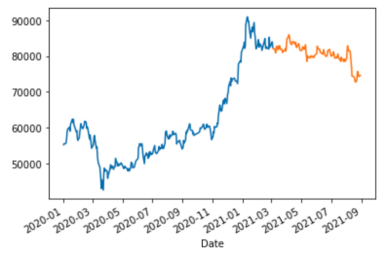
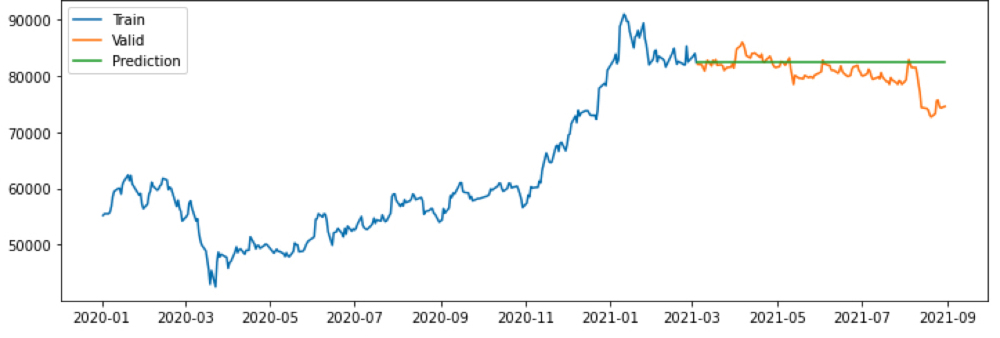
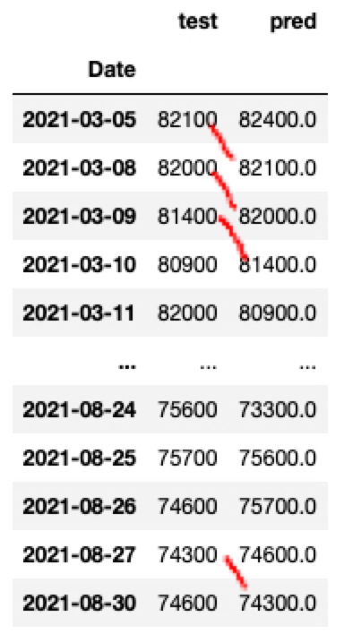
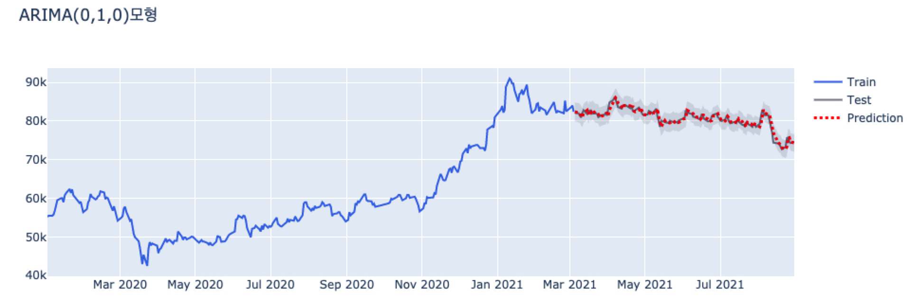
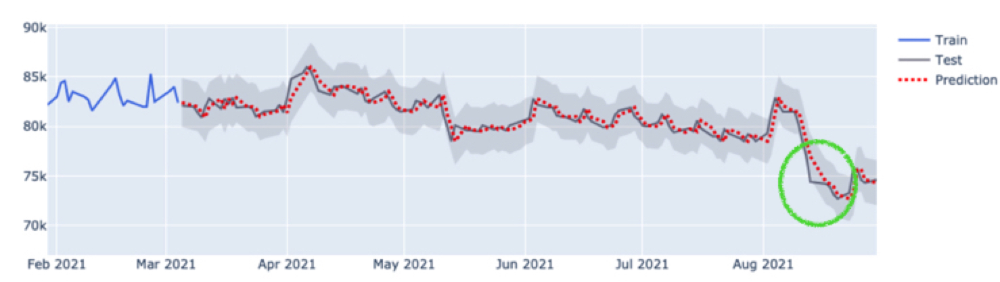

시계열 분석 시리즈 (4): Python auto_arima로 삼성 주가 제대로 예측하기
- ARIMA 예측이 일직선으로 되신다구요? 이 글을 보면 어느 정도 그 이유와 해결 방법을 찾을 수 있습니다.
- 이번 포스팅에서는 시계열 분석 시리즈 (3): auto_arima를 잘 쓰기 위한 배경 지식에 이어 실제로 auto_arima로 삼성전자의 주가를 예측한 과정을 정리하였습니다… (
응또삼; 응지 또 삼성전자 주가…) - pmdarima 공식페이지와, 여기에 있는 10.1. Stock Market Prediction 예시를 주로 참조하였습니다.
auto_arima를 활용한 ARIMA 적합 및 예측 과정 요약
auto_arima 함수는 R의 auto.arima 함수를 본따 만들어진 Python의 pmdarima 라이브러리에 있는 함수로,
ARIMA 모형의 차수 p,d,q와 계수를 자동으로 추정해주는 함수입니다.
그러나 이 "자동"이라는 단어 때문에 단순하게 데이터를 적합만 하면 된다라고 생각할 수 있지만,
흘러가는대로 적합하다보면 엉뚱한 예측 결과 (ex. 시간에 따라 예측값이 선형으로 증가하거나 일직선)를 얻곤 합니다.
그렇기 때문에 auto_arima가 어떻게 작동하는지 살펴보기 위해
이전 포스팅에서 auto_arima를 쓰기 위한
배경지식을 알아보았습니다.
이를 통합했을 때, 전체적인 ARIMA 적합 및 예측 과정은 다음과 같습니다.
- 시각화: 시계열 자료를 시각화해서 추세, 계절성, 주기가 있는지 파악합니다. 혹은 데이터를 변환해줄 필요가 있는지 파악합니다.
- 추세가 있다면 정상성을 만족하지 않기 때문에 몇 차 차분이 적당할지 단위근 검정을 해야 합니다. 이는 pmdarima.arima의
ndiffs함수로 쉽게 구할 수 있습니다. - 계절성이 있다면 비계절성 ARIMA 대신 계절성 ARIMA (SARIMA)를 따르므로, auto_arima 함수의
seasonal = True로 지정해주어야 합니다. - 주기가 있다면 auto_arima 함수의
m의 인자에 넣어주어야 합니다. 이는 계절적 주기에 얼마나 많은 관측치가 있는지를 명시하는 파라미터이고, 데이터 분석가가 개입해서 넣어줘야 하는 값 (apriori)입니다. 예를 들어m = 7이면 일별 (daily),m = 52이면 주별 (weekly)1년에 52주가 있기 때문에 52의 주기를 가집니다!,m = 12이면 월별 (monthly) 데이터입니다. 기본값은m = 1로, 비계절성 데이터를 의미합니다. - 데이터 변환은 과거와 현재, 미래 데이터를 봤을 때 분산의 차이가 크다면 로그 변환이나 Box-Cox 변환을 고려해볼 수 있습니다.
- 추세가 있다면 정상성을 만족하지 않기 때문에 몇 차 차분이 적당할지 단위근 검정을 해야 합니다. 이는 pmdarima.arima의
- 모형 적합: auto_arima를 통해 적당한 p,d,q를 추정하고, 계수들을 추정합니다.
- 잔차 검정: 잔차가 백색잡음 과정인지 (=정상성을 만족하는지), 정규성 및 등분산성을 만족하는지 파악합니다.
summary결과에서 Ljung-Box (Q) / Heteroskedasticity (H) / Jarque-Bera (JB) 검정 만족 여부를 파악하실 수 있습니다.plot_diagnostics잔차 그래프로도 정상성과 정규성을 만족하는지 파악하실 수 있습니다.
- 모형 refresh 및 예측: 모형이 잘 적합되었으면 모형을 refresh하면서 미래 관측치를 예측합니다. NEW!! 지난 번 설명에서 업데이트되는 부분! 주의할 점은
한번에 테스트 데이터를 예측하는 것이 아니라, 하나씩 예측하고 관측치를 업데이트해주는 과정이 필요하다는 점입니다. 이 부분이 바로 "모형을 refresh"하는 과정입니다. - 모형 평가: MAPE로 잔차가 실제 값에서 얼마나 벗어나 있는지 파악합니다.
4번에서, 예측을 할 때 왜 모형을 refresh 해줘야 할까요? "refresh"는 말 그대로 "새롭게 하다"라는 의미를 갖고 있는데요.
ARIMA 모형을 refresh하지 않으면, 시간이 지나도 계속 과거 데이터로 구축한 모형으로 먼 미래를 예측하는 꼴이기 때문에 정확하게 예측하기 어렵습니다.
예컨대 4년 전 데이터로 ARIMA 모형을 구축해놓고 모형의 업데이트 없이 오늘의 데이터를 예측한다면, 좋은 예측 결과를 내기 어렵겠죠?
그 대신 가장 최신의 데이터들로 모형을 적합해야 미래의 값들을 예측하기 가장 좋을 것입니다.
그렇기 때문에 모형을 refresh하는 과정은 필수적인데, 그 방법은 두 가지입니다.
- 주기적으로 새 관측치가 왔을 때 ARIMA의 모형의 모수들을 재추정합니다. ARIMA p,d,q 값을 바꿔주고, 계수들도 다시 추정합니다.
- 아직 모든 모형의 모수들을 재추정할 때가 아니라면, 모수들을 재추정하기보단 가장 최신의 데이터를 모형에 추가해서 새로운 예측치가 최신의 데이터를 반영할 수 있도록
update해주는 과정이 필요합니다.
개인적으로 1번의 경우 모형을 새로 바꾸는 것이기 때문에 너무 빈번하게 하기보단 연간, 월간으로 할텐데,
2번의 경우 1번을 하지 않을 때 매번 데이터가 쌓일 때마다 해주는 것이 좋을 것 같다 생각이 듭니다.
이 포스팅에서도 2번을 중심으로 모형을 refresh하는 과정에 대해 설명드리고자 합니다.
자세한 논의는 pmdarima 설명 페이지의 5. Refreshing your ARIMA models에서 확인하실 수 있습니다.
실전 ! 삼성전자 주가로 ARIMA 최적 모델 찾기
자, 이제 위 과정으로 삼성전자 주가를 auto_arima로 예측한 예시에 대해 보여드리겠습니다.
이를 위해 20년 1월부터 21년 8월 30일까지의 일별 삼성전자 주가 데이터를 불러왔습니다.
1 | import FinanceDataReader as fdr |
Step 1. 시계열 자료 시각화
삼성전자 종가를 시각화하면 다음과 같습니다.
1 | y_train = ss['Close'][:int(0.7*len(ss))] |

이런 추세형 그래프를 보고 들으면 좋은 생각은
- 정상성은 확실히 만족하지 않겠다 -> 차분이 꼭 필요하겠다 -> ARIMA의 차수 가 1 이상이겠구나라 생각해볼 수 있고
- 상승 추세가 있긴 하지만, 최근에 와서 주춤하는 모습을 보인다. -> 상수항이 없는 임의 보행 모형은 아닐까?라 생각해볼 수 있고
- 계절성이나 주기성은 크게 보이진 않기 때문에 관련 모수
seasonal이나m은 auto_arima에 적용할 필요는 없겠다 예상해볼 수 있습니다.
정말 차분이 필요한지, 필요하다면 몇 차 차분이 최선인지 파악하려면 아래와 같이 ndiffs 함수를 이용할 수 있습니다.
1 | kpss_diffs = ndiffs(y_train, alpha=0.05, test='kpss', max_d=6) |
1 | > 추정된 차수 d = 1 |
분산 안정화가 필요한지의 여부는 모델이 너~무 적합이 안된다면 다시 시도해보도록 하겠습니다.
Step 2. ARIMA 모형 적합
자, 이제 모델 auto_arima 함수로 최적의 모형을 탐색해보겠습니다. 위에서 7:3의 비율로 train과 test 데이터를 나누었습니다.
train 데이터로 학습을 하고, test 데이터로 예측을 해봅니다.
1 | model = pm.auto_arima(y = y_train # 데이터 |
auto_arima에 주요한 옵션들을 설명하면 다음과 같습니다.
더 자세한 설명은 공식 가이드를 참조바랍니다.
y: array 형태의 시계열 자료d(기본값 = none): 차분의 차수, 이를 지정하지 않으면 실행 기간이 매우 길어질 수 있음start_p(기본값 = 2),max_p(기본값 = 5): AR(p)를 찾을 범위 (start_p에서 max_p까지 찾는다!)start_q(기본값 = 2),max_q(기본값 = 5): AR(q)를 찾을 범위 (start_q에서 max_q까지 찾는다!)m(기본값 = 1): 계절적 차분이 필요할 때 쓸 수 있는 모수로 이면 분기별, 면 월별, 이면 계절적 특징을 띠지 않는 데이터를 의미한다.m=1이면 자동적으로 seasonal 에 대한 옵션은 False로 지정된다.seasonal(기본값 = True): 계절성 ARIMA 모형을 적합할지의 여부stepwise(기본값 = True): 최적의 모수를 찾기 위해 쓰는 힌드만 - 칸다카르 알고리즘을 사용할지의 여부, False면 모든 모수 조합으로 모형을 적합한다.trace(기본값 = False): stepwise로 모델을 적합할 때마다 결과를 프린트하고 싶을 때 사용한다.
정말 간단하게 필수적인 옵션만 갖고 적합하면 아래와 같습니다.
참고로 d의 값을 1로 둔 이유는, 위에서 ndiffs함수로 추정된 d의 값이 1이였기 때문입니다.
1 | model = pm.auto_arima (y_train, d = 1, seasonal = False, trace = True) |
1 | Performing stepwise search to minimize aic |
auto_arima를 사용한 결과 최적의 모델은 ARIMA (0,1,0) 모형으로 나왔습니다.
이 모형을 풀어 말하면 1차 차분을 했을 때 백색 잡음 ()임을 의미하고,
결국 아래 식처럼 임의 보행 모형 (Random Walk Model)을 따른다는 것을 알 수 있습니다.
Step 3. 잔차 검정
잔차가 백색잡음 과정인지 (=정상성을 만족하는지), 정규성 및 등분산성을 만족하는지 파악합니다.
summary결과에서 Ljung-Box (Q) / Heteroskedasticity (H) / Jarque-Bera (JB) 검정 만족 여부를 파악하실 수 있습니다.plot_diagnostics잔차 그래프로도 정상성과 정규성을 만족하는지 파악하실 수 있습니다.
1 | print(model.summary()) |
1 | SARIMAX Results |
- Ljung-Box (Q) / Heteroskedasticity (H) / Jarque-Bera (JB)에 대한 부분은 모두 잔차에 대한 검정 통계량들입니다.
-
Ljung-Box (Q) 융-박스 검정 통계량는 잔차가 백색잡음인지 검정한 통계량입니다.
Prob (Q) 값을 보면 0.65이므로 유의수준 0.05에서 귀무가설을 기각하지 못합니다.
Ljung-Box (Q) 통계량의 귀무가설은 "잔차(residual)가 백색잡음(white noise) 시계열을 따른다"이므로, 위 결과를 통해 시계열 모형이 잘 적합되었고 남은 잔차는 더이상 자기상관을 가지지 않는 백색 잡음임을 확인할 수 있습니다. -
Jarque-Bera (JB) 자크-베라 검정 통계량은 잔차가 정규성을 띠는지 검정한 통계량입니다.
Prob(JB)값을 보면 0.00으로 유의 수준 0.05에서 귀무가설을 기각합니다.
Jarque-Bera (JB) 통계량의 귀무가설은 "잔차가 정규성을 만족한다"이므로, 위 결과를 통해 "잔차가 정규성을 따르지 않음"을 확인할 수 있습니다. -
Heteroskedasticity (H) 이분산성 검정 통계량은 잔차가 이분산을 띠지 않는지 검정한 통계량입니다.
-
또한, 잔차가 정규분포를 따른다면, 경험적으로
- 비대칭도 (Skew)는 0에 가까워야 하고
- 첨도 (Kurtosis)는 3에 가까워야 합니다.
위 Summary 결과를 통해 비대칭도는 0.53으로 0에 가깝지만 첨도는 4.67로 3보다 더 높은 값을 가지고 있음을 알 수 있습니다.
이를 아래와 같이 plot_diagnostics() 함수로도 확인하실 수 있습니다.
1 | model.plot_diagnostics(figsize=(16, 8)) |

잔차가 백색 잡음을 따르는지 보여주는 플랏은 Standardized residual과 Correlogram 그림입니다.
- Standardized residual은 잔차를 그냥 시계열로 그린 것입니다. 백색 잡음 답게 잔차의 시계열이 평균 0을 중심으로 무작위하게 움직이는 것을 볼 수 있습니다.
- Correlogram은 잔차에 대한 ACF입니다. ACF도 어느 정도 허용 범위 안에 위치하여 자기상관이 없음을 알 수 있습니다.
잔차가 정규성을 만족하는지 보여주는 플랏은 Histogram plus estimated density와 Normal Q-Q 그림입니다.
- Histogram plus estimated density는 잔차의 히스토그램을 그려 정규 분포 N(0,1)과 밀도를 추정한 그래프를 같이 겹쳐서 보여줍니다. 위 비대칭도와 첨도에서 확인하셨던 것처럼 정규분포와 비슷하게 대칭적이지만, 첨도가 더 뾰족하게 솟아오른 것을 알 수 있습니다.
- Normal Q-Q그래프는 Q-Q 플랏으로 정규성을 만족한다면 빨간 일직선 위에 점들이 분포해야 합니다. 그러나, 양 끝 쪽에서 빨간 선을 약간 벗어나는 듯한 모습을 보입니다.
결과적으로 저희가 적합한 ARIMA (0,1,0)으로 남은 잔차는 백색 잡음이지만, 정규성은 따르지 않는다 볼 수 있습니다.
그래서 어떻게 하냐! 글쎄요… 여기에는 정답은 없습니다.
저 같으면 일단 넘어가고 예측에 실패하면 다시 모형 설정을 바꿔서 테스트할 것 같습니다. 그래프를 봐도 알 수 있듯이 그렇게 티나게 정규분포를 벗어나는 것 같지 않아서이죠! (주관입니다)
예측에 실패한다면 위 설명 드린 auto_arima 모수인 p,d,q의 max를 늘려볼 수도 있고, train데이터를 더 최근만 가져올 수도 있고, 아니면 분산 안정화를 시도해볼 수도 있습니다.
Step 4. 모형 refresh 및 예측
이제 잔차 검정을 했으니 테스트 데이터 예측을 해보도록 하겠습니다.
1 | # 테스트 데이터 개수만큼 예측 |

위 예측 결과를 보면 prediction에 해당하는 초록색 선이 일직선으로 예측됨을 알 수 있습니다.
이것이 저희가 원하는 예측 결과일까요? 왜 이렇게 예측되었을까요?
이에 대한 답은 이 곳 에서 찾을 수 있었습니다.
auto_arima 모형으로 찾은 ARIMA 모형은 ARIMA (0,1,0) 모형으로, 1차 차분 시 백색 잡음인 모형입니다.
결국 아래 식처럼 상수항이 없는 임의 보행 모형 (Random Walk Model)을 따른다는 것을 알 수 있습니다.
그런데, 예측을 할 때 innovation term인 의 기댓값이 0이기 때문에 이 부분을 0으로 대체하게 됩니다. 따라서, 예측치들은 결국 가장 마지막 관측치가 되는 것이죠.
결국, 부분은 0으로 대체되고, 임의 보행 모형에서는 예측치들이 가장 마지막 관측치로 동일하기 때문에 일직선을 얻게 되는 것입니다.
그렇다면, auto_arima가 왜 임의 보행 모형을 가장 적합한 모델로 선택했을까요?
데이터에 특정한 주기나 추세가 없기 때문에, AIC로 모형을 최적화를 하는 과정에서 의미있는 자기 상관 (AR)이나 이동 평균 (MA)를 찾기 어려웠기 때문입니다. 따라서, 최선책으로 임의 보행 모형 어제의 값이 오늘의 값을 가장 잘 설명한다는 모형이 데이터를 가장 잘 설명한다는 결론을 내립니다.
결과적으로, 데이터에서 어떠한 구조를 보기 어렵기 때문에, 가장 마지막 관측치가 가장 좋은 예측치다라 말하고 있는 것입니다.
그러나, 실제로 ARIMA로 양질의 예측을 하려면 위 방법으로는 탐탁치 않습니다.
따라서 한번에 테스트 데이터를 예측하는 것이 아니라, 한 스텝씩 예측하고, 테스트 데이터를 "관측"할 때마다 모형을 업데이트해주는 REFRESH 전략을 쓸 것입니다.
이를 위해서 아래와 같이 forecast_one_step() 함수를 정의합니다.
자세히 보면 predict() 함수의 n_periods 인자에 위처럼 y_test 길이인 len(y_test) 대신에 1이 들어갔습니다.
즉, y_test 전체 길이만큼 예측하는 것이 아니라 1개만 예측하는 함수를 정의한 것입니다.
1 | def forecast_one_step(): |
그 후,
- 훈련 데이터로 1개 예측한 값1-step ahead forecast을
fc,conf에 넣었고, 이를y_pred,pred_upper,pred_lower에 저장하였습니다. - 테스트 데이터
y_test가 관측되었으면 모형model에new_obs를 넣어 관측치를 추가해줍니다. 이update과정이 바로 모형을 refresh하는 방법이고,
관측치가 추가됨으로써 AIC, 로그 가능도가 다시 계산되고 가장 마지막 관측치가 업데이트 됩니다.
즉, 가장 마지막 관측치가 업데이트가 되기 때문에 관측치가 추가됨으로써 임의 보행 모형에서의 예측치도 업데이트됩니다.
1 | forecasts = [] |
테스트 데이터는 모형 성능 평가를 위한 것이고 실제 상황에서는 없을텐데요.
예를 들어 실제 상황에서 일별 데이터가 쌓이는 구조라 가정하면 다음과 같이 예측치가 계산됩니다.
- 과거 N일 전 ~ 오늘까지의 데이터로 최적의 ARIMA 모형을 찾는다.
- 이로 내일의 데이터를 예측한다. 만일 임의 보행 모형이라면, 내일의 예측값은 오늘의 관측치이다!
- 내일 데이터가 쌓이면, ARIMA 모형에 업데이트해준다. 이로 인해 AIC, 로그 가능도가 다시 계산되고, 마지막 관측치도 내일의 데이터가 된다.
- 따라서, 모레의 데이터 예측치는 내일 데이터가 된다!
- 모레 데이터가 쌓이면, ARIMA 모형에 업데이트해준다. (무한 반복)
이렇게 전체 데이터를 예측하지 않고 1개씩 업데이트 해주면 가장 마지막 관측치가 업데이트되면서 예측치도 이에 따라 업데이트됩니다.
아래와 같이 실제값과 예측값을 비교해보면 오늘의 실제값이 내일의 예측값임을 확인하실 수 있습니다.
1 | pd.DataFrame({"test": y_test, "pred": y_pred}) |

또한, 모형이 다 업데이트된 후 summary를 다시 출력해보면 다음과 같이 No. Observations이 289개에서 테스트 데이터 124개만큼 늘어 413개로 데이터가 업데이트됐음을 알 수 있습니다.
마찬가지로, 로그 가능도, AIC, 계수 출력값, 검정 통계량 값도 다시 계산되었음을 확인하실 수 있습니다.
1 | print(model.summary()) |
1 | SARIMAX Results |
자, 그럼 잘 적합되었는지 그림을 그려보겠습니다.
1 | from plotly.subplots import make_subplots |

그림을 보면 테스트 데이터를 통째로 넣는 것과 달리 예측이 잘 되었음을 확인하실 수 있습니다.

더 자세히 보면, 테스트 값을 하루 미루면 예측값이 되어야 하는데요. 그렇다고 보기엔 초록색 동그라미 부분이 평행 이동이 아닌 것 같은 느낌을 지울 수 없었습니다.
그 이유는 실상 주식 데이터는 주말에 없기 때문에 3일 뒤에 예측될 수도 있어 (금요일 데이터 -> 월요일에 반영) 그런 것이었고, 주중에서는 딱 1일 뒤 데이터가 예측값으로 잘 들어가 있었습니다.
Step 5. 모형 평가
이 모형에 대한 평가를 하기 위해 MAPE (Mean Absolute Percentage Error) 지표를 활용하겠습니다.
를 예측값, 를 실제 테스트 데이터 값이라 할 때
MAPE는 다음과 같이 "잔차 ()의 크기가 실제 값 의 크기에서 차지하는 백분율"로,
작을수록 좋습니다.
1 | def MAPE(y_test, y_pred): |
위와 같이 잔차가 실제값의 0.792% 를 차지할 정도로 모형이 잘 적합되었음을 알 수 있습니다.
결론
결론이 되게 허무합니다. 삼성 주가를 예측한 결과는 결국 1일 전 데이터 값을 매번 업데이트해주면 된다는 결론입니다.
임의 보행 모형이 아니라면, 조금 더 재밌는 예측 결과가 나올텐데 아쉽습니다.
ARIMA 모형은 정말 뚜렷한 주기성이 있거나 추세가 있을 때 좋은 예측 결과를 내지 않을까 생각해봅니다.
다음은 Facebook의 Prophet 모형에 대해 정리해보고, ARIMA와 비교해보는 글을 작성하고자 합니다!